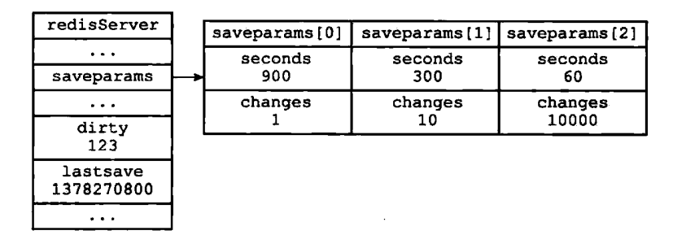
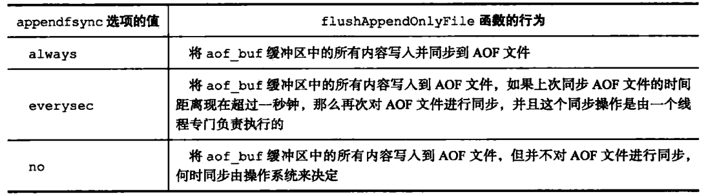
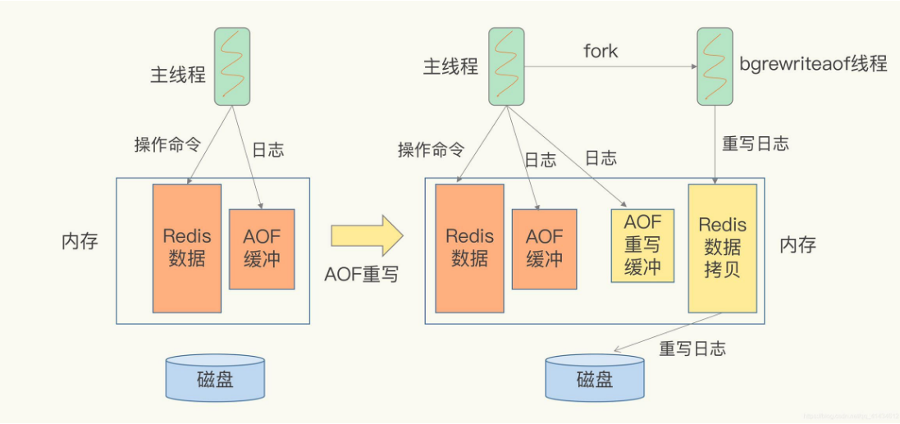
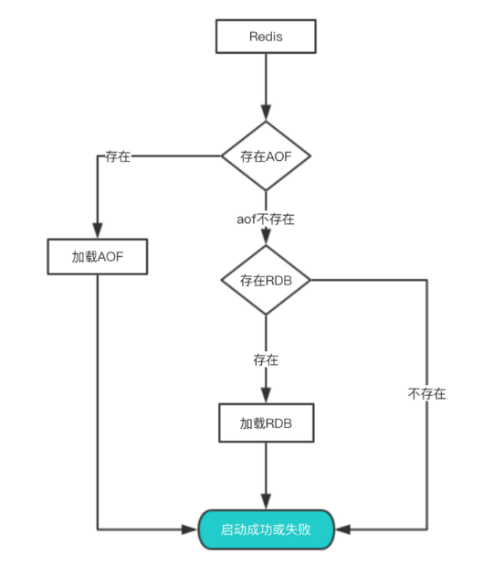

Redis持久化
1. 为什么需要持久化：
Redis是一个内存数据库，因此在服务器宕机之后，内存里的数据就会消失。因此Redis需要某种方式能够在在服务器重启之后恢复成原来的状态。
2. Redis的持久化方式：
Redis主要的持久化方式主要有两种，一种是RDB（快照），另一种是AOF。
3. RDB持久化：
RDB持久化就是将Redis在内存中的数据库状态保存到磁盘里面，其所生成的rdb文件是一个经过压缩的二进制文件。
RDB持久化有两种方式，一种是手动执行，另一种是根据服务器配置定期执行。
手动执行有两个Redis命令，一个是save，另一个是bgsave；二者的区别在于save命令会阻塞服务器进程，知道rdb文件创建完成，而bgsave命令会派生出一个子进程，由子进程负责创建rdb文件；（需要注意的是在bgsave运行期间，save，bgsave将会被拒绝，而bgrewrite命令会被延迟到bgsave结束再运行）
定期执行是用户通过设置服务器配置的save选项，添加多个保存条件，然后由服务器每隔一段时间自动执行一次bgsave命令；
保存条件的设置：保存条件存储在redisserver的saveparams数组中，每个数组元素都存储了second和changes两个数据；除了saveparams数组，Redisserver还记录了dirty和lastsave参数，距离上一次save或bgsave命令，服务器对数据库进行了多少次修改，以及上一次执行save或bgsave命令的时间。

Redis服务器的时间事件serverCron每隔100毫秒就会对正在运行的服务器进行维护和检查。
RDB优缺点
- 优点
- RDB文件是某个时间节点的快照，默认使用LZF算法进行压缩，压缩后的文件体积远远小于内存大小，适用于备份、全量复制等场景；
- Redis加载RDB文件恢复数据要远远快于AOF方式；
- 缺点
- RDB方式实时性不够，无法做到秒级的持久化；
- 每次调用bgsave都需要fork子进程，fork子进程属于重量级操作，频繁执行成本较高；
- RDB文件是二进制的，没有可读性，AOF文件在了解其结构的情况下可以手动修改或者补全；
- 版本兼容RDB文件问题；
针对RDB不适合实时持久化的问题，Redis提供了AOF持久化方式来解决
4. AOF持久化
AOF持久化是通过保存Redis服务器所执行的写命令来记录数据库状态的，属于写后日志，即先写入内存，再写入日志文件。其他的数据库像是MySQL都是写前日志。
AOF日志记录Redis的每个写命令，步骤分为：命令追加（append）、文件写入（write）和文件同步（sync）。
- 命令追加 当AOF持久化功能打开了，服务器在执行完一个写命令之后，会以协议格式将被执行的写命令追加到服务器的 aof_buf 缓冲区。
- 文件写入和同步 关于何时将 aof_buf 缓冲区的内容写入AOF文件中，Redis提供了三种写回策略：

服务器在每次结束一个事件循环之前，都会调用flushAppendOnlyFile函数，考虑是否将aof_buf函数写入和保存到AOF文件中。
AOF重写：AOF会记录每个写命令到AOF文件，随着时间越来越长，AOF文件会变得越来越大。为了解决AOF文件体积膨胀的问题，Redis提供了文件重写功能。
由于AOF的重写程序aof_rewrite函数会进行大量的写入操作，因此Redis将AOF重写程序放入子进程里执行，执行的过程如下所示。由于在aof重写的时候，可能会有新的命令对数据库状态进行更改，为此Redis设置了AOF重写缓冲区，操作命令不仅会追加到AOF缓冲区内，还会追加到AOF重写缓冲区内；

5. 从持久化文件中恢复数据
每次服务器重启的时候，会根据磁盘中保存的rdb文件和aof文件，进行数据恢复；恢复的流程图如下。

6. 参考
[1] http://redisbook.com/
[2] https://pdai.tech/md/db/nosql-redis/
[3] https://segmentfault.com/a/1190000040102333
[4] https://limuzhi.com/2017/11/18/cardinality-counting/